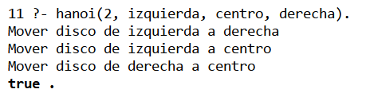
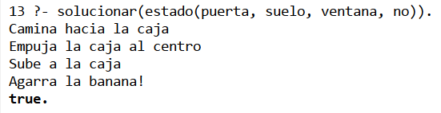

Practica4: El paradigma logico
Materia: 40032 - Paradigmas de la Programación
Docente: M.I. José Carlos Gallegos Mariscal
Grupo: 941
1. Introducción
1.1 Objetivo
El objetivo de esta práctica fue introducir el paradigma lógico de programación mediante el uso del lenguaje Prolog, utilizando el entorno SWI-Prolog.
Se implementaron dos problemas clásicos de inteligencia artificial:
- Las Torres de Hanoi
- El problema del Mono y la Banana
A diferencia de otros paradigmas, en Prolog no se describe paso a paso cómo resolver un problema, sino que se definen hechos y reglas, y el sistema de inferencia encuentra la solución mediante unificación y backtracking.
1.2 Herramientas utilizadas
| Herramienta | Función |
|---|---|
| SWI-Prolog | Intérprete del lenguaje Prolog |
| Visual Studio Code | Editor de código |
| GitHub | Repositorio del proyecto |
1.3 Conceptos del paradigma lógico
| Concepto | Descripción |
|---|---|
| Hechos | Afirmaciones verdaderas |
| Reglas | Relaciones lógicas entre hechos |
| Consultas | Preguntas al sistema |
| Unificación | Emparejamiento de patrones |
| Backtracking | Búsqueda automática de soluciones |
2. Desarrollo de la práctica
2.1 Estructura del proyecto
practica-prolog/
├── hanoi.pl
├── mono.pl
├── index.md
2.2 Torres de Hanoi
Descripción
El problema consiste en mover una serie de discos de un poste a otro utilizando un poste auxiliar, sin colocar un disco grande sobre uno más pequeño.
Codigo Fuente
% Caso base
hanoi(1, Origen, Destino, _) :-
write('Mover disco de '), write(Origen),
write(' a '), writeln(Destino).
% Caso recursivo
hanoi(N, Origen, Destino, Aux) :-
N > 1,
N1 is N - 1,
hanoi(N1, Origen, Aux, Destino),
write('Mover dis de '), write(Origen),
write(' a '), write(Destino),
hanoi(N1, Aux, Destino, Origen).
Ejecución
?- hanoi(3, izquierda, derecha, centro).
Resultado
El programa genera los movimientos necesarios para resolver el problema de forma recursiva.
2.3 El Mono y la Banana
Descripción
Se modela un problema de búsqueda donde un mono debe alcanzar una banana utilizando una caja.
Estado del problema
estado(PosMono, Altura, PosCaja, TieneBanana)
Codigo fuente
caminar(estado(_, suelo, Caja, Banana),
estado(Caja, suelo, Caja, Banana)).
mover_caja(estado(Pos, suelo, Pos, no),
estado(centro, suelo, centro, no)).
subir(estado(centro, suelo, centro, no),
estado(centro, encima, centro, no)).
agarrar(estado(centro, encima, centro, no),
estado(centro, encima, centro, si)).
solucionar(E0) :-
caminar(E0, E1),
mover_caja(E1, E2),
subir(E2, E3),
agarrar(E3, _).
Ejecución
?- solucionar(estado(puerta, suelo, ventana, no)).
2.4 Observaciones
- Prolog resuelve problemas mediante reglas, no instrucciones paso a paso.
- El orden de las reglas es importante.
- Si una condición no coincide, el sistema intenta otra solución automáticamente.
3. Conclusión
Esta práctica permitió comprender cómo el paradigma lógico utiliza reglas y hechos para resolver problemas. Se observó que Prolog es especialmente útil para problemas de inteligencia artificial y búsqueda en espacios de estado, ya que el sistema realiza la inferencia automáticamente.
4. Evidencias
Torre de Hanoi

El Mono y la Banana
